<!DOCTYPE html>
<html>
<head>
  <meta charset="utf-8">
  <title>My Blog - index</title>
  <link rel="stylesheet" href="style.css">
  <link rel="stylesheet" href="aside_motion_style.css">
  <script src="jquery-3.6.0.min.js"></script>
  <script src="colors_index.js"></script>
  <!-- <script src="aside_motion.js"></script> -->
</head>
  <aside style="z-index:1;">
    <div class="header">
            <div class="menu_btn"><a href="#">
            
            </a>
            </div>
    </div>
    <div class="menu_bg"></div>
    <div class="sidebar_menu">
         <div class="close_btn"><a href="#">
             
             </a>
         </div>
         <ul class="menu_wrap" style="font-size:30px">
              <li><a href="index.html">Home</a></li>
              <li><a href="2.Information.html">Information</a></li>
              <li><a href="3.게시글.html">게시글</a></li>
         </ul>
    </div>
  <!-- <ol> -->
  <h1>My Blog</h1>
  <h2>ksnx3684</h2>
  <div>
  <!-- <li><a href="index.html">HOME</a></li>
  <li><a href="2.Information.html">Information</a></li>
  <li><a href="3.게시글.html">게시글</a></li> -->
  <!-- </ol> -->
  </aside>
  <body>
    <div id="background_button" style="z-index:2;">
      <input type="button" value="night" onclick="nightDayHandler(this);">
    </div>
    <div id="grid">
    </div>

    <div id="article">
      <h3 style="font-size:30px; color:skyblue">게시글</h3>
      <h3>2021.11.06</h3>
      기본 레이아웃 생성
      <h3>2021.11.07</h3>
      레이아웃 기능 강화<br><br>
      - 1280px 이상에서는 메인메뉴가 좌측 사이드에, 그 이하에서는 상단에 위치하도록 하는 반응형 메뉴를 구성<br><br>
      - 좌측 상단의 컨트롤 도구 클릭시 소리 및 애니메이션과 함께 리스트가 보이도록 구성<br><br>
      - 주/야간 모드 기능 생성<br><br>
    <script src="aside_motion.js"></script>
  </body>
</html>
